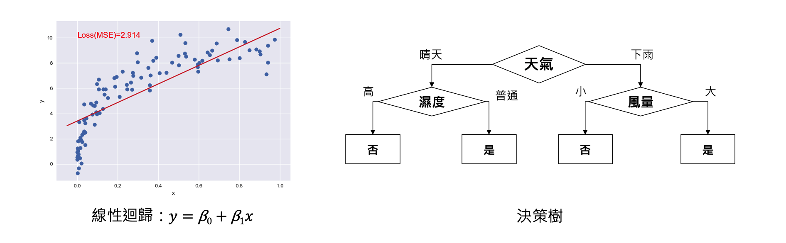
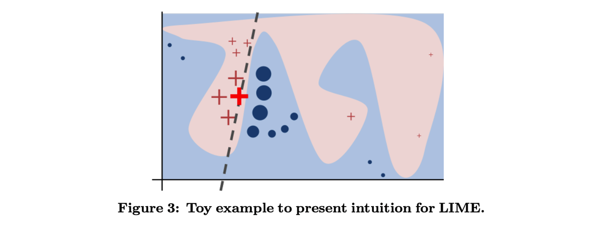
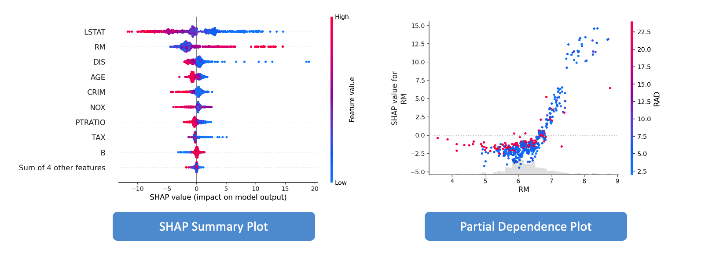

[Day 3] 機器學習中的可解釋性指標
「可解釋性指標」是 XAI 中用來衡量模型可解釋性的評估標準。它們是用來確定模型如何解釋其預測的方式，以及如何在給定輸入後生成可解釋的結果。可解釋性指標可以根據特定的案例和需求而有所不同，但通常會考慮到以下幾個層面：
- 精確度：模型的預測結果能否準確反映實際情況。
- 一致性：模型在不同情況下的預測結果是否一致。
- 可靠性：模型是否能夠可靠地處理所有輸入，包括異常值和噪聲數據。
- 透明度：模型的內部運作是否清晰易懂，能夠被解釋。
- 公平性：模型的預測結果是否公平，即是否存在對某些類別或群體的偏見。
- 可解釋性：模型的預測結果是否能夠被解釋和理解，包括模型的特徵重要性，模型的決策過程以及模型輸出的可視化表示。
準確度與可解釋性的權衡
在機器學習中，我們通常希望模型能夠同時達到高精度和可解釋性，但這兩者之間常常存在一個權衡。近年來隨著模型的精確度和複雜度不斷提高，但也帶來了模型的不透明性。為了更清楚地理解這個權衡，可以使用下面這張圖來比較。

參考 DARPA 's explainable AI 計畫 p. 23
在這個平面圖中，X 軸代表模型的可解釋性，越靠右表示模型越容易解釋。Y 軸代表模型的複雜度，越高表示模型越複雜。通常情況下，複雜的模型（例如深度神經網絡）能夠實現更高的準確度，但解釋性較差。相反，較簡單的模型（例如線性迴歸）通常具有更好的解釋性，但是準確度可能不如複雜模型。
幸運的是，近年來一些新的結構化解釋性指標和可視化技術正蓬勃發展中，可以幫助解釋深度學習和機器學習模型。因此，這些指標和可視化技術可以將複雜黑盒子模型移動到平面圖上的更高解釋性區域。
可解釋性指標有哪些？
以下為各位整理一些常見的可解釋性指標，每種指標都有其專門的方法和技術來實現。這些可解釋性指標可以協助我們確定哪些機器學習模型可以被視為可解釋的，因為它們能夠產生可靠的預測，同時也能夠解釋模型預測的過程和結果。
1. 特徵重要性 (Feature Importance)
這種方法可用於對全局和局部進行解釋，以解釋單個特徵的貢獻和影響。然而該方法往往難以解釋特徵之間的相互作用和複雜關係。常用的計算方法包括基於樹的模型的重要性指標和線性迴歸中的係數等。

此外特徵重要性指標中最典型例子就是敏感度分析（Sensitivity Analysis）。其目的是探討輸入特徵對模型輸出的影響程度，常用的方法有 Permutation Importance、Drop Column Importance 等方法。
2. 局部解釋性 (Local Explanations)
針對單筆資料預測的解釋方法，通常具有更高的彈性和細膩度，但可能會受到隨機性的影響，且無法解釋整個模型的行為。LIME 就是一種針對個別實例進行模型預測解釋的方法，它可以快速對複雜的黑盒模型進行解釋。透過對資料進行抽樣並使用黑盒模型來預測，然後根據實例之間的相似度對這些預測進行權重分配，從而學習出一個局部可解釋的線性模型。

LIME論文：“Why Should I Trust You?” Explaining the Predictions of Any Classifier
3. 全局解釋性（Global Explanations）
如果你看過前一篇文章，肯定對它不陌生。它可以解釋整個模型的預測行為，例如 Partial Dependence Plot（PDP）、Individual Conditional Expectation（ICE）、SHAP Summary Plot 和 Feature Interaction Plot等。這種解釋方法較為全面和綜觀，是 XAI 中最常見和最受歡迎的解釋方法。

4. 結構化解釋性（Structured Explanations）
是指用結構化的方式將模型預測的過程和結果進行解釋。這種方法將預測的解釋分為多個步驟，將每個步驟的解釋呈現為一個結構化的形式，例如樹狀圖、流程圖或語法解釋等。透過這種方式，我們可以更清楚地了解模型的決策過程和關鍵因素，也能夠更容易地理解模型的預測結果。常見的結構化解釋性指標包括 Decision Tree、RuleFit 等。此方法雖然能夠生成可解釋的模型，易於理解和解釋。但是，這些模型往往較為簡單，可能無法擁有較高的預測能力。
RuleFit 將線性模型和決策樹結合，同時學習特徵的重要性和特徵之間的交互作用，生成可解釋性強的模型。RuleFit 演算法的流程如下：
- 資料預處理：對資料進行特徵提取和預處理，包括缺失值填充、特徵標準化等。
- 基本樹模型生成：使用決策樹演算法生成一組基本樹模型，並提取出每個葉子節點的特徵。
- 線性模型訓練：將基本樹模型中的葉子節點特徵作為新的輸入特徵，使用線性迴歸演算法訓練一個線性模型。
- 預測：對於新的測試樣本，先使用基本樹模型將其映射到葉子節點上，並將葉子節點特徵作為輸入特徵，再使用訓練好的線性模型進行預測。
RuleFit論文：Predictive learning via rule ensembles
5. 誤差分析（Error Analysis）
透過誤差分析，我們可以了解模型在哪些情況下表現不佳，並且針對這些情況進行調整，以提高模型的準確度。可以用於解釋模型在測試數據集上的誤差原因，例如 Confusion Matrix、ROC Curve、Precision-Recall Curve。在機器學習中，常見的任務有迴歸和分類兩種。以下分別介紹這兩種任務常見的誤差評估指標：
迴歸問題的評估指標：
- 均方誤差 (Mean Squared Error, MSE)：預測值與實際值的差的平方和的平均值，評估模型的整體預測能力。
- 均方根誤差 (Root Mean Squared Error, RMSE)：MSE 開根號，與 MSE 相比更能反映預測值與實際值的真實差距。
- 平均絕對誤差 (Mean Absolute Error, MAE)：預測值與實際值的差的絕對值的平均值，評估模型的整體預測能力。
- 平均絕對百分比誤差（Mean Absolute Percentage Error, MAPE）：用來衡量迴歸模型的預測精度，其計算方式為預測值和真實值之間的絕對誤差佔真實值的百分比的平均值。通常來說，MAPE 的數值越小越好，一般認為 MAPE 小於 10% 表示模型的預測效果較好。
- 決定係數 (R-squared)：評估模型與實際值之間的相關性，值越高代表模型的解釋能力越好，但也容易過度擬合。
分類問題的評估指標：
- 混淆矩陣 (Confusion Matrix)：列出實際值與預測值的對應情況，便於評估模型的準確性、召回率等指標。
- 準確率 (Accuracy)：預測正確的樣本數除以總樣本數，評估模型的整體預測能力。
- 精確率 (Precision)：預測為正的樣本中實際為正的比例，評估模型對正樣本的預測能力。
- 召回率 (Recall)：實際為正的樣本中預測為正的比例，評估模型對正樣本的覆蓋能力。
- F1值 (F1 Score)：精確率和召回率的加權調和平均數，綜合評估模型的預測能力。
6. 真實性驗證（Fidelity）
真實性驗證可以提高模型的信心和可靠性，避免過度擬合和選擇性偏差等問題。通常建議真實性驗證使用的測試資料集的數量應該與訓練資料集的數量相當，並且可以使用交叉驗證等方法來進一步驗證模型的可靠性。除此之外它還可以評估模型解釋是否忠實反映模型的決策過程，常用的方法有 Anchors、Counterfactual Explanations 等。
Anchors論文：Anchors: High-Precision Model-agnostic Explanations
小結
今天學到了許多機器學習中的可解釋性指標，但是使用不同的可解釋性指標時，應該注意以下幾點： - 適用範圍：不同的可解釋性指標適用於不同的場景，應根據具體需求選擇。 - 精度和穩定性：解釋性指標在不同場景下可能存在精度和穩定性問題，應慎重使用。 - 解釋效果：可解釋性指標不僅應該能夠生成可解釋的結果，而且還應該能夠讓使用者更好地理解模型，避免出現誤解或誤解。 - 結果呈現：不同的可解釋性指標生成的結果形式不同，需要根據需求選擇適當的呈現方式，以便於使用者理解。